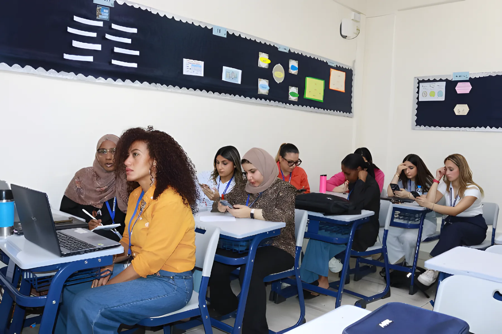
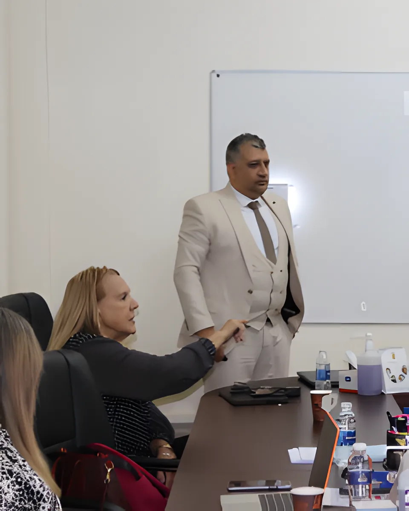
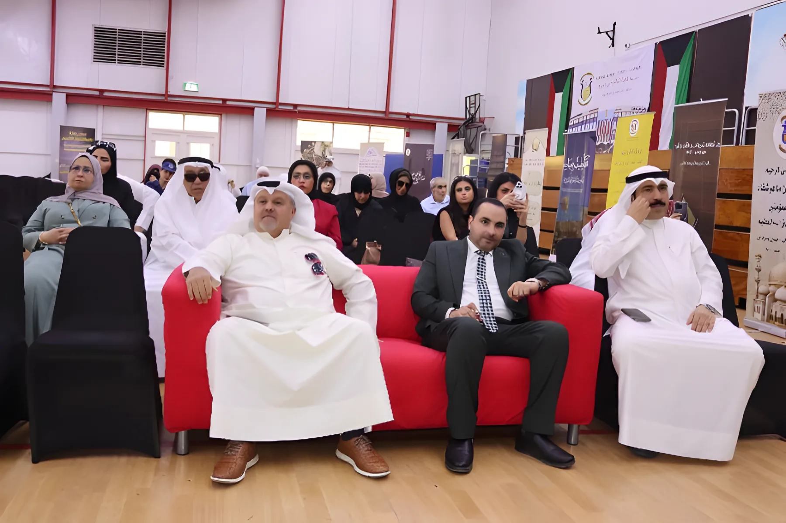
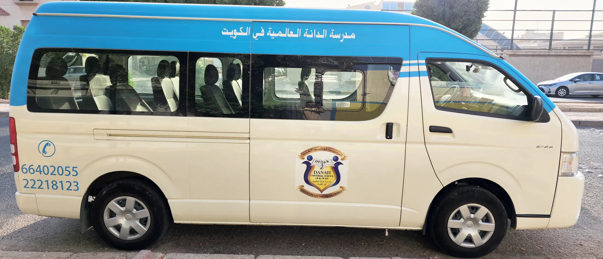
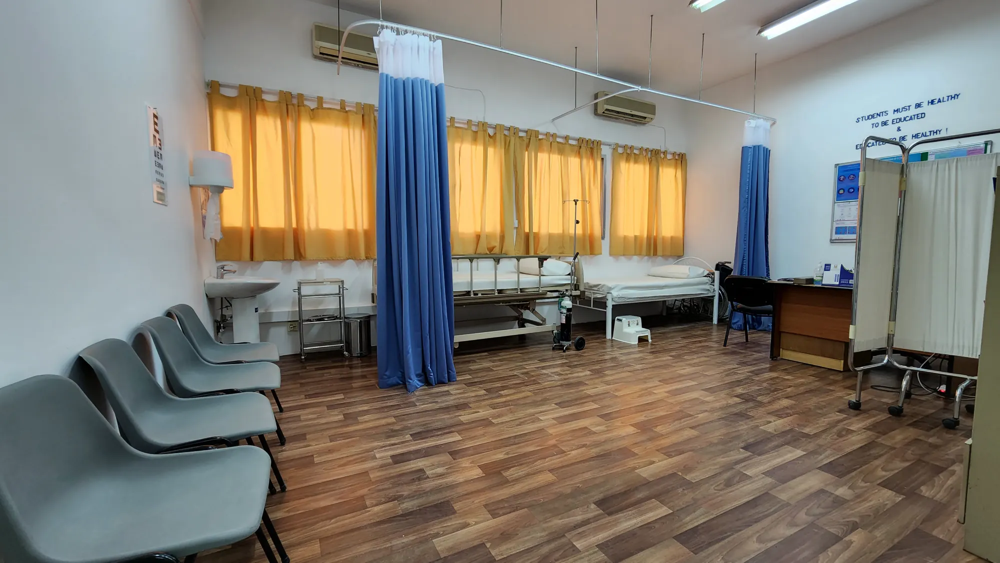
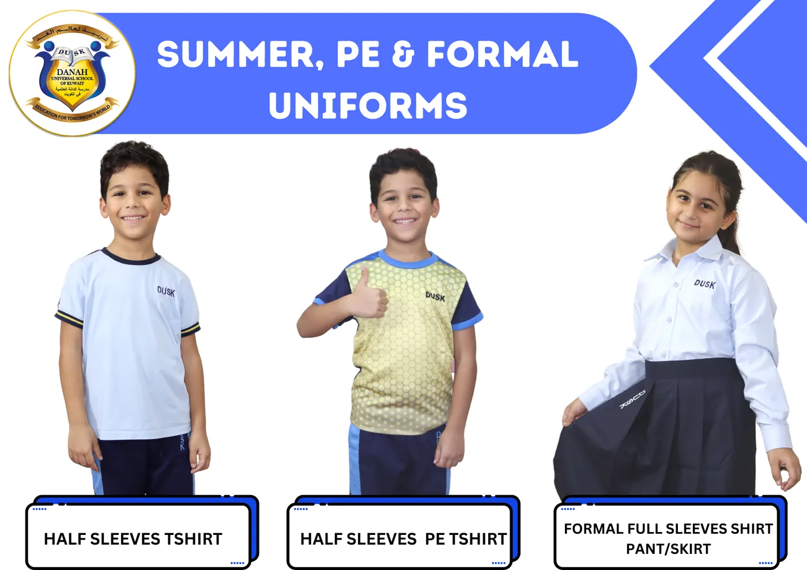

Learning & campus
What your child studies at DUSK, how we grade and report, and the services around the school day: the bus, the clinic and the uniform.

Curriculum
DUSK is an American school. We follow the Common Core State Standards (CCSS) for literacy and mathematics and the Next Generation Science Standards (NGSS) for science. English is the language of instruction.
Arabic is part of the Language Arts and follows Ministry of Education guidelines, together with Islamic studies. French is taught as a foreign language. Students also take Emotional Intelligence, Visual and Creative Arts, IT, Music, Robotics and Physical Education.
The school is accredited by Cognia, which carries out rigorous, on-site external reviews of Pre-K to 12 schools.

Grading and reports
Teachers email parents during the year whenever there's something to discuss, and formal progress reports go home four times a year. From Grade 2 to Grade 12 we use letter grades:
| Grade | Percentage | Grade | Percentage |
|---|---|---|---|
| A+ | 97–100 | C+ | 77–79 |
| A | 93–96 | C | 73–76 |
| A− | 90–92 | C− | 70–72 |
| B+ | 87–89 | D+ | 67–69 |
| B | 83–86 | D | 63–66 |
| B− | 80–82 | D− | 60–62 |
F is 59% and below for English subjects, and 49% and below for Arabic subjects, as set by the Ministry.

Extra credit classes
A wide range of extra credit subjects alongside the main curriculum:
- Psychology
- Physics
- Chemistry
- Biology
- Environmental Science
- Geometry
- Algebra 2
- Commerce
- Banking
- Life Skills
- Creative Arts
- English
- Arabic
- Social Science
- Geography
- History

MAP testing
NWEA MAP Growth measures where a student is now and how they grow over time. It's a computer-adaptive test: each question depends on the answer to the one before.
We use it for English Reading and English Language Use in Grades 9 to 11, with a fall and a winter session. Results show which skills a student has and what they're ready to learn next, so teachers can plan for each student, and students can follow their own progress.

Edunation, the parent portal
Every family gets a login to Edunation, our learning management system. Login details and a parent's guide are sent by email.
- Assignments, grades and digital report cards
- Attendance, with an alert for any missed class
- School fees, payment history and reminders
- Messages with teachers and school staff, and school announcements
- Your child's profile, kept up to date by you

Student and Parent Councils
Students from Grade 4 to Grade 12 can stand for the Student Council. Representatives are chosen at the start of each year and speak for their classmates on how the school is run.
The Parent Council is a volunteer committee of parents that works with the school and represents families. If you'd like to take part, tell the school office.


Facilities
- 25-metre swimming pool
- Indoor gym and auditorium
- Two semi-covered sports grounds and recess areas
- Lunch canteens for elementary, middle and high school
- Robotics lab, and three IT labs for elementary, middle and high school
- Two art rooms and a music room
- School library and a yearly book fair

Bus service
Our buses collect students from outside their homes in the morning and bring them back after school, in Salwa and the neighbouring areas.
To arrange it, contact the Transport Manager through the school office. You'll need to show us your home on a map and give us your address and contact details. Students stay seated with seat belts on until the bus stops.

School clinic
A one-room, one-bed clinic with oxygen for emergencies. The nurses give first aid to students and staff, and look after students with ongoing health conditions or medication, keeping class tutors informed.
Each year they check every student's height, weight, teeth and vision and tell parents about any concern. They also give the Kuwait Government vaccinations to Year 5, 6 and 12 students and keep each child's government health record.

Uniforms
One uniform from KG1 to Grade 12, in the school's blues, with the DUSK logo.
- Formal: light blue shirt with the DUSK logo, dark blue trousers (boys), dark blue trousers or skirt (girls)
- PE: gold-blue dry-fit T-shirt with logo, light blue half- and full-sleeve T-shirts, navy summer track, dark blue heavy track pants, PE jacket with zip
- Winter: half jacket with zip, navy blue pullover, blue blazer